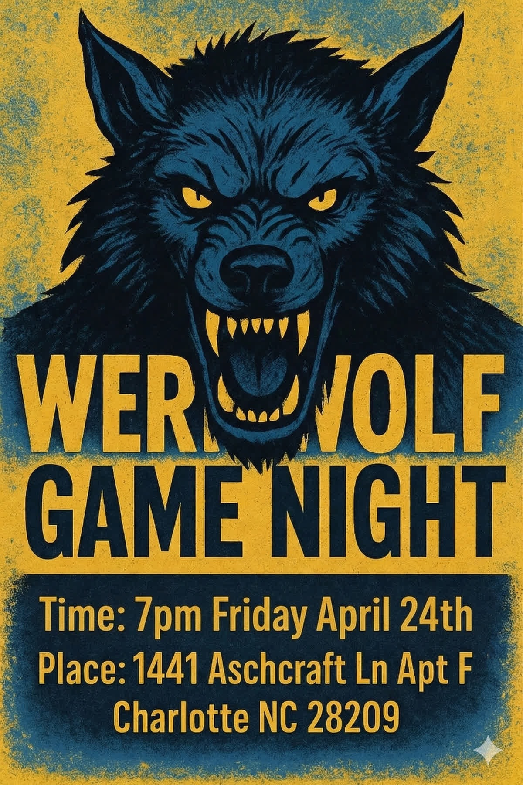

Five Cases from the Plexus to the Foot
Arrow keys to advance | Space for next
Five patients. Each has weakness, numbness, or both. Your job: use the history, physical exam, and EMG/NCS data to figure out exactly where the lesion is.
For each case: we'll work through it together in the app (history, exam, NCS, EMG). Then we'll come back to slides for key teaching points and pearls.
Root or plexus? Trunk or cord? Peripheral nerve? How proximal or distal? Pre- or post-ganglionic? Axonal or demyelinating? Acute or chronic?
If you don't know the root and plexus innervation for each muscle, you cannot localize. You won't know which muscles to test, and you won't recognize the pattern when you see it.
For every muscle: which peripheral nerve, which cord/trunk, which spinal roots.
Example: APB = Median nerve, Lateral + Medial cord, C8-T1. If you don't know this, you can't interpret APB fibrillations.
A weak deltoid (axillary, C5-C6) + weak biceps (musculocutaneous, C5-C6) + normal triceps (radial, C7) tells you the lesion involves C5-C6 but spares C7.
The anatomy IS the localization.
Median Sensory (Index)
Ulnar Sensory (Little finger)
Radial Sensory (Snuffbox)
Sural Sensory
Superficial Fibular Sensory
Saphenous Sensory
Lat Antebrachial Cutaneous (LABC)
Medial Antebrachial Cutaneous (MAC)
Median Motor (APB)
Ulnar Motor (ADM)
Radial Motor (EIP)
Axillary Motor (Deltoid)
Musculocutaneous Motor (Biceps)
Fibular Motor (EDB + TA)
Tibial Motor (AH)
Femoral Motor (Quad)
H-Reflex (Tibial)
The LABC and MAC are your secret weapons -- they localize lesions that standard studies can't.
Deltoid (Axillary, C5-C6)
Infraspinatus (Suprascapular, C5-C6)
Biceps (Musculocutaneous, C5-C6)
Triceps (Radial, C6-C8)
Serratus Anterior (Long Thoracic, C5-C7)
Pronator Teres (Median, C6-C7)
EIP (Radial/PIN, C7-C8)
FCU (Ulnar, C8-T1)
APB (Median, C8-T1)
FDI (Ulnar, C8-T1)
ADM (Ulnar, C8-T1)
Iliopsoas (Femoral, L1-L3)
Rectus Femoris (Femoral, L2-L4)
Vastus Lat/Med (Femoral, L2-L4)
Adductor Longus (Obturator, L2-L4)
Glut Max (Inf Gluteal, L5-S2)
Glut Med (Sup Gluteal, L5-S1)
Tibialis Anterior (Deep Peroneal, L4-L5)
Tib Posterior (Tibial, L5-S1)
Peroneus Longus (Sup Peroneal, L5-S1)
Gastroc (Tibial, S1-S2)
BF Short Head (Sciatic-Peroneal, L5-S1)
Cervical (C5-T1)
Lumbar (L2-S1)
Abnormal paraspinals = root level
Normal paraspinals = plexus or distal
These are non-negotiable. Always test paraspinals.
A good physical exam BEFORE the EMG tells you where to look. A bad exam means you're stabbing in the dark.
Know each muscle's action so you can test it.
Deltoid = shoulder abduction
Biceps = elbow flexion + supination
TA = ankle dorsiflexion
Gastroc = plantarflexion (heel raise)
If you can't localize the weakness on exam, you can't plan the EMG.
Sensory loss pattern tells you which nerves/roots are involved and guides which SNAPs to test.
Reflexes give you root levels instantly:
Biceps = C5-C6 | Triceps = C7
Patellar = L3-L4 | Achilles = S1
An absent reflex narrows your search immediately.
The same EMG findings mean different things in different patients. Always consider the medical history and baseline status.
May already have a background polyneuropathy (low sural SNAP, mildly slow velocities). Now add a plexus injury on top -- you have to separate the new lesion from the old baseline.
Expect: lower amplitudes, slower velocities, possibly absent sural at baseline.
Normal baseline -- every abnormality you find is from the acute injury. Amplitudes should be robust. Any reduction is significant.
Expect: high amplitudes, fast velocities. Even a "borderline" value may be abnormal for this patient.
PMH to check: diabetes (polyneuropathy), alcohol use (toxic neuropathy), anticoagulation (hematoma risk), cancer history (neoplastic plexopathy), recent surgery (iatrogenic injury), age (MUAP duration increases with age).
We'll go through 5 patients -- 3 upper extremity, 2 lower extremity. For each one, we'll work through the history, exam, and EDX data together. Then we'll come back to the slides for the key teaching points.
5 cases. Same toolkit. Different answers.
Sensory branch of musculocutaneous. Abnormal = post-ganglionic. If this were a C6 root, LABC would be normal (DRG intact).
Posterior ramus branches at root level. Normal paraspinals = not a root lesion. Localizes to plexus or peripheral nerve.
C6-C7 median muscle SPARED while C5-C6 muscles from other nerves are affected. This patchy pattern = PTS, not root.
70-80% recover by 2-3 years. 30% bilateral. AIN variant exists (thumb/index DIP weakness only).
LABC SNAP would be normal (pre-ganglionic)
Paraspinals would be abnormal
Pattern would follow the C5-C6 myotome, not be patchy
Pronator teres (C6-C7) would likely be involved
ALL muscles from the upper trunk affected equally (deltoid + biceps + infraspinatus at similar severity)
Not the patchy, nerve-by-nerve pattern we see
Serratus anterior (long thoracic) would typically be spared (branches before trunk)
Supportive care + aggressive PT
Pain management (often resolves on its own)
Serial EMGs at 3-6 month intervals to track reinnervation
NO surgery needed in most cases
Bilateral + recurrent: consider hereditary neuralgic amyotrophy (SEPT9 mutation)
No recovery at 6 months: reconsider diagnosis
Progressive weakness beyond shoulder: think vasculitis/mononeuritis multiplex instead
Localization: Root → Trunk → Cord → Individual Nerves (PATCHY) → Muscle
MAC carries C8-T1 sensory from medial cord. It's the ONLY test that reliably separates lower trunk plexopathy from C8-T1 radiculopathy.
Confirms post-ganglionic. Combined with abnormal SNAPs = trunk-level, not root.
MAC SNAP would be normal (pre-ganglionic, DRG intact)
Paraspinals would be abnormal
Horner's syndrome could be present (T1 root)
Otherwise very similar clinical picture
MAC SNAP would be normal (MAC is a separate nerve from ulnar/median)
Sensory loss in medial arm/forearm would be absent
EIP (radial, C8) would be normal
Two separate entrapment sites needed
Serial EMGs at 3-month intervals
OT for hand function + splinting
If no clinical/EMG recovery by 3-6 months: consider surgical exploration
Nerve grafting or transfer may be indicated
Horner's develops later: reclassify as T1 root avulsion (worse prognosis)
Expanding supraclavicular mass: consider vascular injury or hematoma
No recovery + worsening pain: consider neuroma formation
Localization: Root → Lower Trunk (C8-T1) → Medial Cord → Ulnar + Median → Muscle
All three major sensory nerves normal despite complete anesthesia. Pre-ganglionic = DRG intact.
C5-T1 paraspinals show 3+ fibs. Posterior ramus branches at root level. Confirms root, not plexus.
T1 sympathetic chain disrupted. The complete triad = root avulsion.
Wait 2-3 weeks post-injury for EDX. Wallerian degeneration takes time -- too early = false negative.
SNAPs would be absent (Wallerian degeneration distal to DRG)
Paraspinals would be normal
Horner's would likely be absent (sympathetics at root, not plexus)
Prognosis much better (nerve can regrow)
Bilateral symptoms or long tract signs (legs)
Upper motor neuron findings (hyperreflexia, Babinski, spasticity)
SNAPs preserved (same as avulsion -- but for different reasons)
Bladder/bowel involvement likely
Refer for nerve transfer surgery (the only option)
Nerve grafting won't work (no proximal stump)
Common transfers: spinal accessory → suprascapular, intercostal → musculocutaneous
Best outcomes if surgery within 6 months
Vascular injury: check subclavian artery (pulse, Doppler)
Expanding hematoma: urgent surgical exploration
Progressive myelopathy: pseudomeningocele may cause cord compression
Chronic pain: deafferentation pain is common and debilitating
Localization: Root (C5-T1) [PRE-GANGLIONIC] → Trunk → Cord → Nerve → Muscle
At inguinal ligament (post-surgical): quad weak, iliopsoas SPARED
In iliac fossa (hematoma): quad weak, iliopsoas ALSO weak
Sensory branch of femoral. Absent = post-ganglionic. If L3-L4 radic, saphenous = normal (DRG intact). Always compare to contralateral side.
Treatment: reverse anticoagulation, CT scan, consider surgical decompression.
Adductors would be weak (obturator shares L2-L4 roots)
Paraspinals would be abnormal
Saphenous SNAP would be normal (pre-ganglionic)
Iliopsoas: could be normal or weak depending on level
Quad weak -- same as hematoma case
But iliopsoas would be NORMAL (branches leave before ligament)
Saphenous SNAP abnormal -- same
Key: it's the iliopsoas that differentiates these two
Reverse anticoagulation immediately
CT abdomen/pelvis to confirm hematoma
Vascular surgery consult if expanding
Surgical decompression if severe or worsening
PT for quad strengthening once stable
Hemoglobin keeps dropping: active bleeding, surgical emergency
Bilateral symptoms: consider aortic saddle pathology
Fever + psoas sign: psoas abscess (needs drainage + antibiotics)
No recovery at 6 months: consider neurolysis
Localization: Lumbar Plexus → Femoral Nerve (in Iliac Fossa, PROXIMAL to inguinal ligament) → Quad + Iliopsoas
ONLY hamstring innervated by the peroneal division of the sciatic (branches in thigh).
Abnormal BFSH = sciatic at hip.
Normal BFSH = fibular palsy at knee.
Glut max (inferior gluteal) + Glut med (superior gluteal) both normal.
These nerves branch from the sacral plexus BEFORE the sciatic. Normal = not plexopathy, not root.
Sciatic injury = 0.5-2% of THAs. Prognosis: 6-18 months partial recovery. Many have permanent foot drop.
ONLY peroneal-division muscles affected (TA, EHL, peroneus)
Tibial muscles (gastroc, tib post) would be normal
Hamstrings completely normal
BFSH normal (branch already left sciatic in thigh)
Sural SNAP normal (tibial territory)
Glut max would be weak (inferior gluteal, L5-S1)
Glut med would be weak (superior gluteal, L5-S1)
Paraspinals would be abnormal
SNAPs would be normal (pre-ganglionic)
Completely different picture
AFO (ankle-foot orthosis) for foot drop
Aggressive PT for remaining function
Serial EMGs at 3-month intervals for prognosis
Look for nascent MUAPs = reinnervation (good sign)
If no recovery at 6 months: consider tendon transfer
Worsening after 1-2 weeks: post-op hematoma compressing nerve (needs imaging)
Vascular compromise: check distal pulses
Contralateral symptoms: epidural hematoma or cauda equina
Complete absence of any recovery at 12 months: permanent deficit likely
Localization: Sacral Plexus → Sciatic Nerve (at Hip) → Peroneal + Tibial Divisions → All muscles below knee + hamstrings
| PTS | Klumpke's | Root Avulsion | Retro Hematoma | Sciatic at Hip | |
|---|---|---|---|---|---|
| Key SNAP | LABC abnormal | MAC abnormal | ALL preserved | Saphenous absent | Sural/SFib absent |
| Paraspinals | Normal | Normal | Abnormal | Normal | Normal |
| Key Muscle | Patchy multi-nerve | Thenar + hypothenar | All C5-T1 | Iliopsoas | BFSH |
| Key Spared | Hand, pronator | Biceps, deltoid | None | Adductors | Glutes |
| Horner's | No | No | Yes | No | No |
| Pre/Post | Post | Post | Pre | Post | Post |
SNAPs for pre- vs post-ganglionic. Paraspinals for root vs plexus. The pattern of weak vs spared muscles for the exact lesion site.
Questions?
